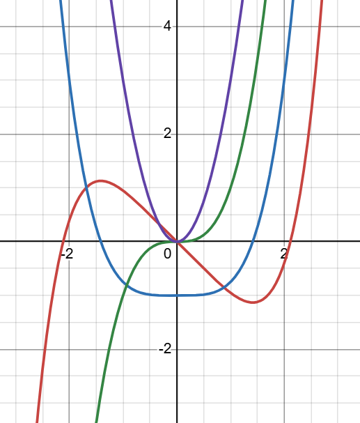

Example 3.7.1.
From the curve of given plots identify the functions and explain your reasoning.

Solution.
select one curve as a function of \(f(x)\) and starts ploting its higher derivative curve as \(f'(x), \, f''(x), \, etc.\text{.}\)
The main function is similar to \(f(x) = x^5-x\) which is the last red curve (d), \(f\prime (x)= x^4-1\) is blue curve (c), \(f\prime\prime(x)=x^3\) is green curve (b), and the first purple curve (a) is similar to \(f'''(x)=x^2.\)